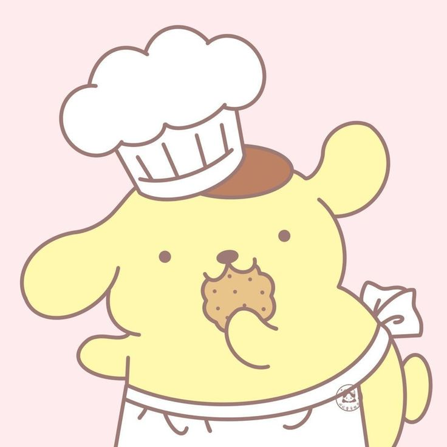
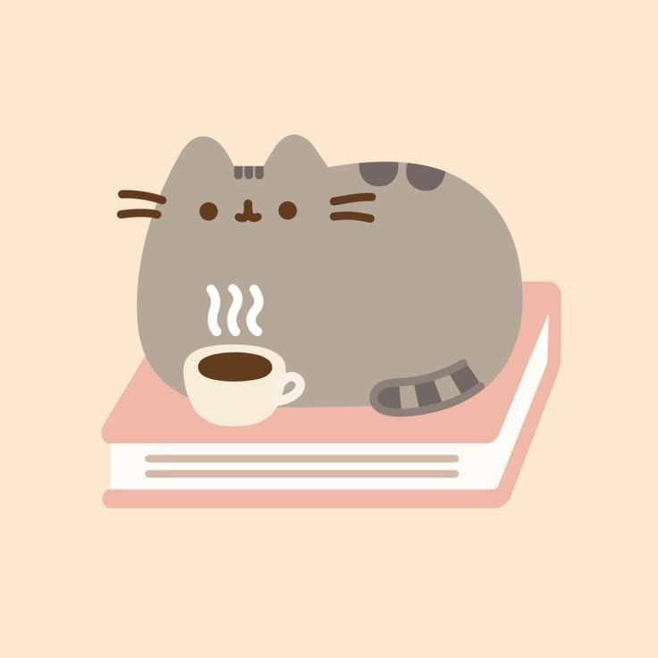
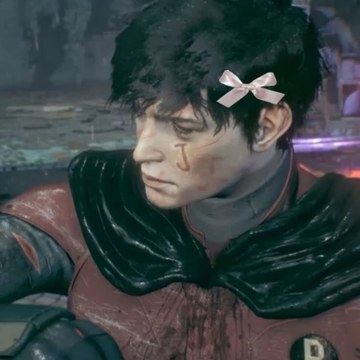

¡Hola! Soy Esmeralda Garcia Tecpili, del grupo 2AP.
Soy una estudiante de programación que ama el color rosita y las vibras tiernas, pero que también tiene un lado genial: ¡me encanta Batman y mi personaje favorito es Jason Todd! 🦇

En la Cocina 🍳Me encanta experimentar nuevas recetas en la cocina y crear platillos ricos. ¡Cocinar me relaja muchísimo!

Mis Lecturas 📚Devoro libros y cómics. Leer cosas personales e historias me ayuda a viajar a otros mundos y enriquecer mi dialecto.

Universo Batman 🦇Aunque adore los tonos rositas y tiernos, Jason Todd es mi favorito de los cómics. ¡Amo ese contraste en mis vibras!